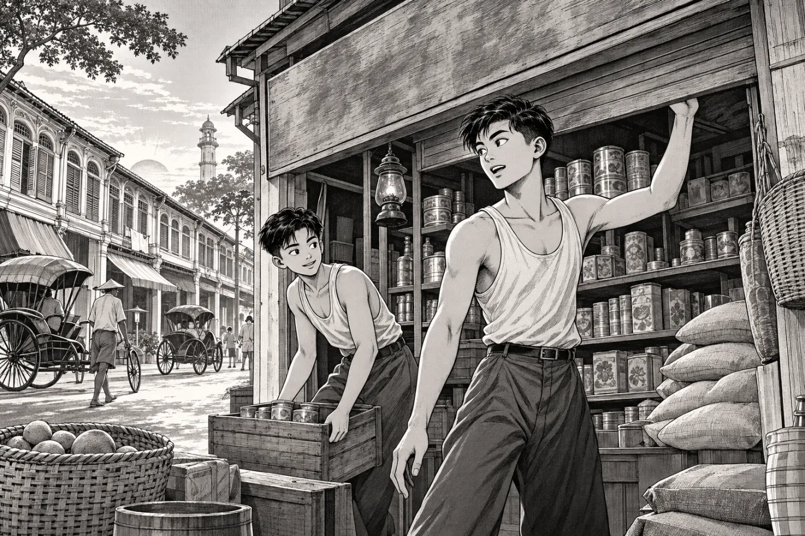

Scroll down and each chapter's lines appear by themselves. Use “Check the facts” to see what the record says.
Chapter 1 · 1940s
The shutter goes up

CLACK!
Rice, oil, tins. Whatever the neighbourhood needs.
Open early. Close late. Customers first.
The Goh brothers open a provision store on Rochor Road.Check the facts
Record: GJH traces its business to a provision store run by the Goh brothers on Rochor Road in the 1940s, and prints “Since 1940”. The present company, Goh Joo Hin Pte Ltd, was incorporated on 23 September 1993.
Accounts differ: a 2024 Lianhe Zaobao interview says the chairman's father took over an existing shop and added the family surname. The two accounts are not reconciled here.
Dramatised: the dialogue, the faces and the doorway. The shop number and opening day are not in the public record.
A feast in a tin. Abalone, ready for the family table.
Give me two. One for the reunion dinner!
New Moon begins with abalone, its first product.Check the facts
Record: New Moon dates its own brand and its first product, abalone, to 1959. Singapore's trademark register shows a canned-abalone mark filed on 23 April 1959 and registered on 8 March 1960.
Accounts differ: GJH's SG60 feature places New Moon's entry into its own portfolio in the mid-1980s. 1959 is the brand's date.
Dramatised: the shop scene and the reunion-dinner line. The red crescent is a design flourish.
Fruit, vegetables, sauces. One more brand for the pantry.
Count every carton. The lorry leaves at noon.
MILI joins New Moon as the company's second house brand.Check the facts
Record: GJH's timeline identifies MILI, a canned fruit, vegetable, meat, seafood and sauce line, as its second house brand in 1981. Its Singapore canned-food trademark was filed on 9 April 1981.
Dramatised: the godown, the manager and the schedule are illustrative.
Export becomes part of the story. Distributors carry the brands onward.Check the facts
Record: GJH's timeline lists a 1982 export milestone and describes a regional distributor network. Markets it names include Malaysia, Indonesia, China, Hong Kong, Thailand, Brunei, Vietnam, Cambodia and the Philippines. Separately, GJH says its brands are trademark-protected in 17 markets.
Dramatised: the handshake. GOGO's page gives 1986 and Flying Wheel's gives 2004, so this chapter dates no single brand. The first shipment's date, route and buyer are not public.
Health supplements and consumer electronics join the food shelves.Check the facts
Record: GJH calls Borsch Med its fifth brand and dates its move into health to 2004 (a brand registration; the company Borsch Med Pte. Ltd. was incorporated in 2000). The timeline then records electronics: Gigaset (2006), Sony personal entertainment (2011), GP Batteries (2016), Casio musical instruments and LG home entertainment (2018) and SteelSeries (2025).
Dramatised: the shop and the characters. Roles differ by partner: Gigaset, Sony, GP Batteries and Casio are distributor relationships, while LG's own campaign pages name GJH as a participating retailer.
Brands reach home tables across generations.Check the facts
Record: GJH operates from 8 Gul Avenue, Singapore, with a second office in Senai, Johor. On 1 August 2010 it organised the New Moon Big Walk with North East CDC (about 5,000 walkers, rice valued at S$85,000), and the two set up a separate S$200,000 healthcare fund for seniors.
Dramatised: the family. They are not real customers.